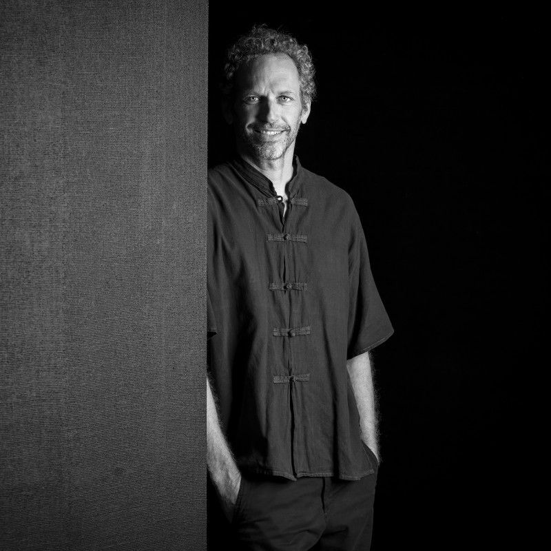
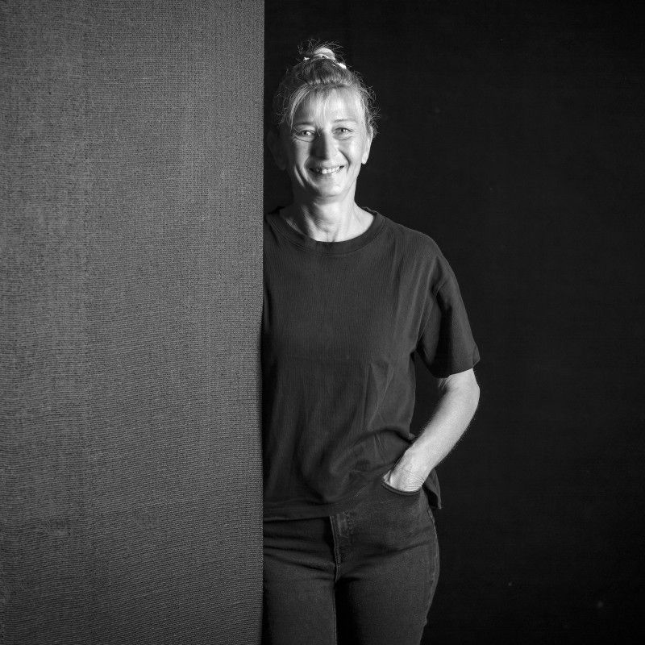
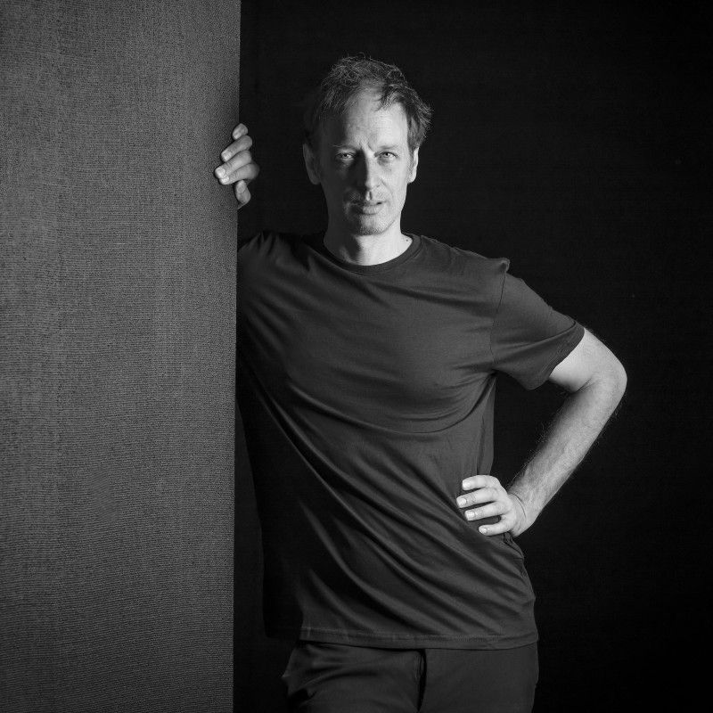
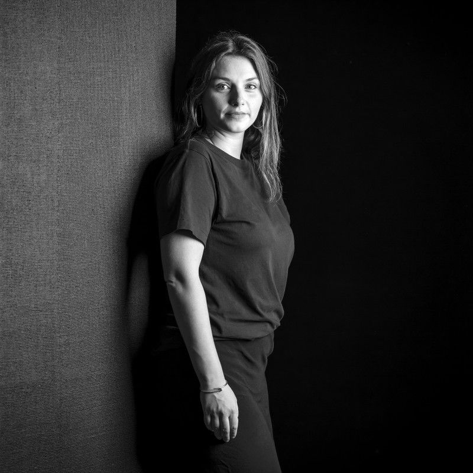
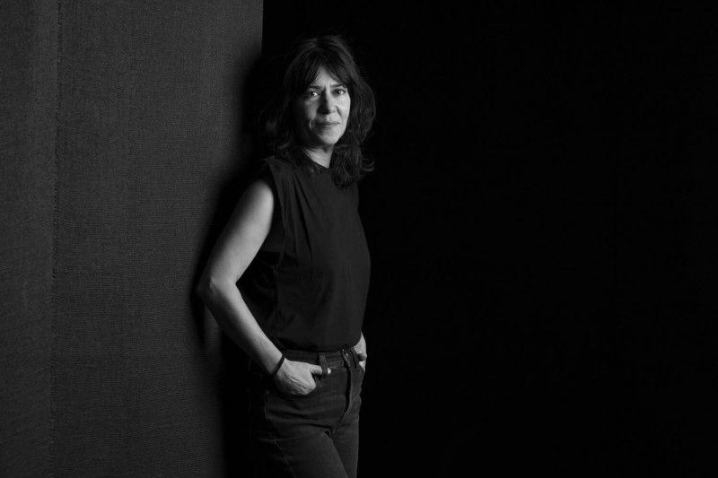
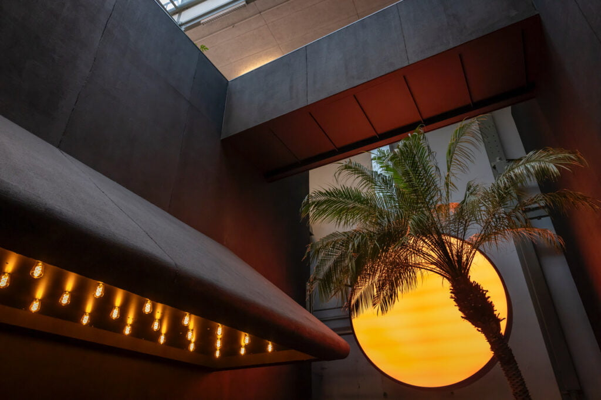

Un lieu et ses résidents, qui apprennent, créent et rayonnent ensemble
Downtown Studio occupe 1500 m² au 10 rue des Vieux-Grenadiers, à Genève, à la même adresse que le MAMCO. On y trouve des salles de post-production, un plateau de tournage, des bureaux, et les studios et indépendants qui y travaillent.
Trois colonnes sur un socle
Chaque activité de la maison a une seule place. Le socle porte ce que Downtown possède et fait lui-même ; les trois colonnes reposent dessus. Chaque élément mène à sa page.
Créer avec nous
Downtown assemble l'équipe d'un projet parmi ses résidents.
Apprendre & explorer
La formation et la recherche, portées par Progress, et la résidence Explore.
Le lieu et ses résidents
Depuis [À VALIDER : date de référence de la maison (2004 sous le nom Freestudios, 2022 ou 2024)]
Freestudios, rue Gourgas à Genève. [À VALIDER : mention de l'héritage Freestudios (fondation en 2004, changement de nom en Downtown Studio SA en avril 2024)]
Freestudios lance Downtown Studio, centre d'expertise dédié aux industries audiovisuelles, au 10 rue des Vieux-Grenadiers.
Création de l'association Progress au sein de Downtown Studio, en novembre.
Inauguration officielle du lieu, le 26 septembre.
En décembre, la Fondation Portail des Nations confie à Downtown Studio la direction créative de Together.
[À VALIDER : mention de Magnetic validée par son comité (association indépendante fondée par Downtown Studio et Headfun)]
L'équipe de Downtown
Les métiers de l'image et du son sont ceux des résidents. Voir les résidents →








Quatre verbes
Downtown Studio met en commun ses salles et son matériel, et réunit ceux qui s'en servent.
On y transmet son métier et on y teste les techniques qui arrivent dans la profession.
Avec qui la maison travaille
La Fondation genevoise pour la formation professionnelle et continue finance les formations de Progress, dont Progress AI.
Elle a financé la salle de cours de Progress et ses équipements.
Le fonds incitatif genevois rembourse jusqu'à 30 % des dépenses de post-production. Conditions →
Les écoles de cinéma dont viennent les jeunes professionnels du programme Lift.
Ils en parlent
Kit presse : [À VALIDER : kit presse téléchargeable (logos, photos, texte de présentation)]
Contact presse : [À VALIDER : adresse et contact presse]
Passez prendre un café
Le café de la maison est ouvert aux membres et à leurs invités.
